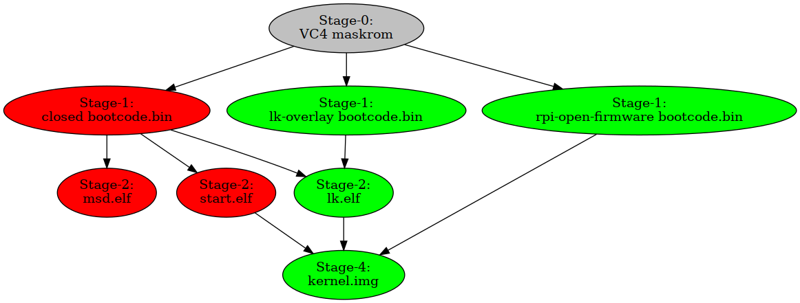
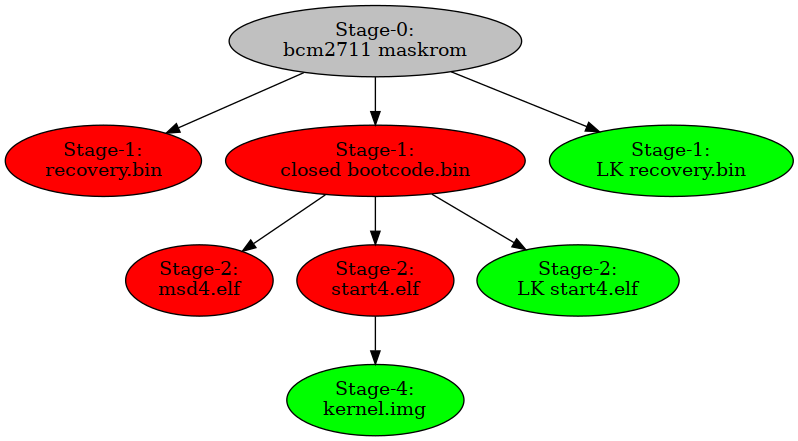
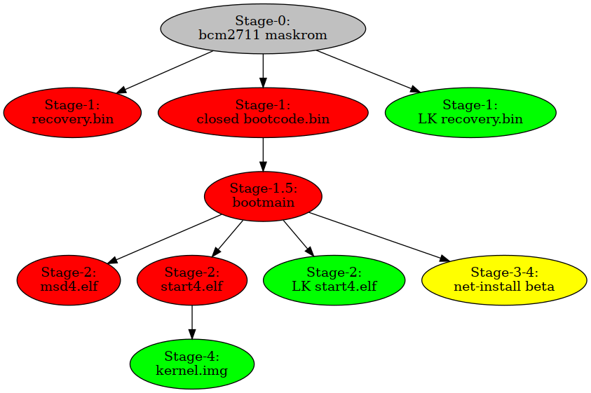

How the free and nonfree firmware work
Stages
These firmwares (especially the stock firmware) have steps called "stages".
On most RaspberryPies, you have the following :
Stage 0, loads Stage 1 ;
Stage 1, initialises the ram and loads Stage 2 ;
Stage 2, initialises everything else and loads linux.

However, in the RaspberryPi 4, it's a bit different:
Stage 0, loads Stage 1 ;
Stage 1, initialises the ram, and network, among other things and loads Stage 2 ;
Stage 2, initialises everything else and loads linux.

And in the RaspberryPi 4 beta firmware, there's another stage and changes on Stage 1:
Stage 0, loads Stage 1 ;
Stage 1, initialises the ram and network, among other things and loads Stage 1.5, bootcode.bin ;
Stage 1.5, initialises the network and usb, among other things and loads Stage 2
Stage 2, initialises everything else and loads linux.

Boot flow and secure boot
See these notes.